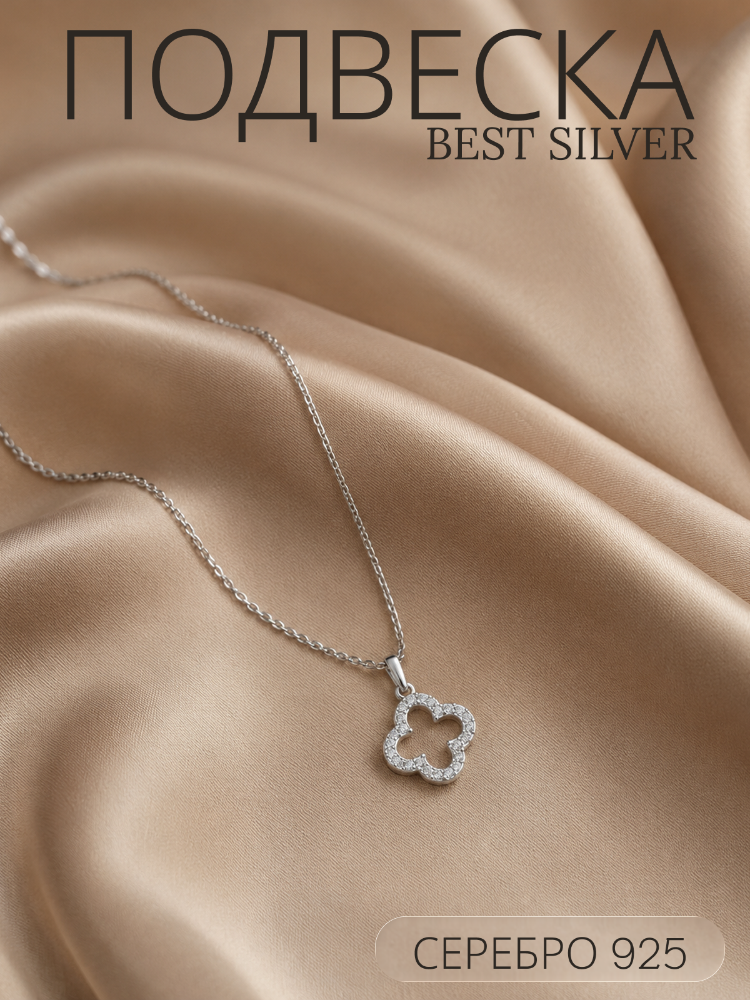
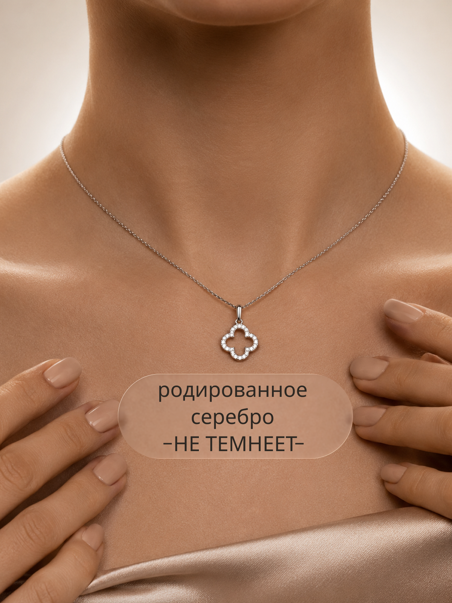
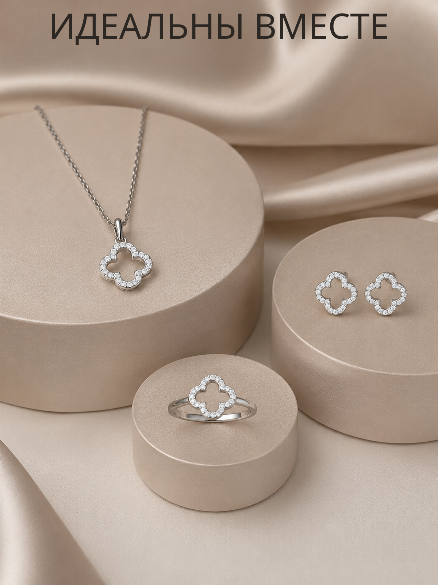
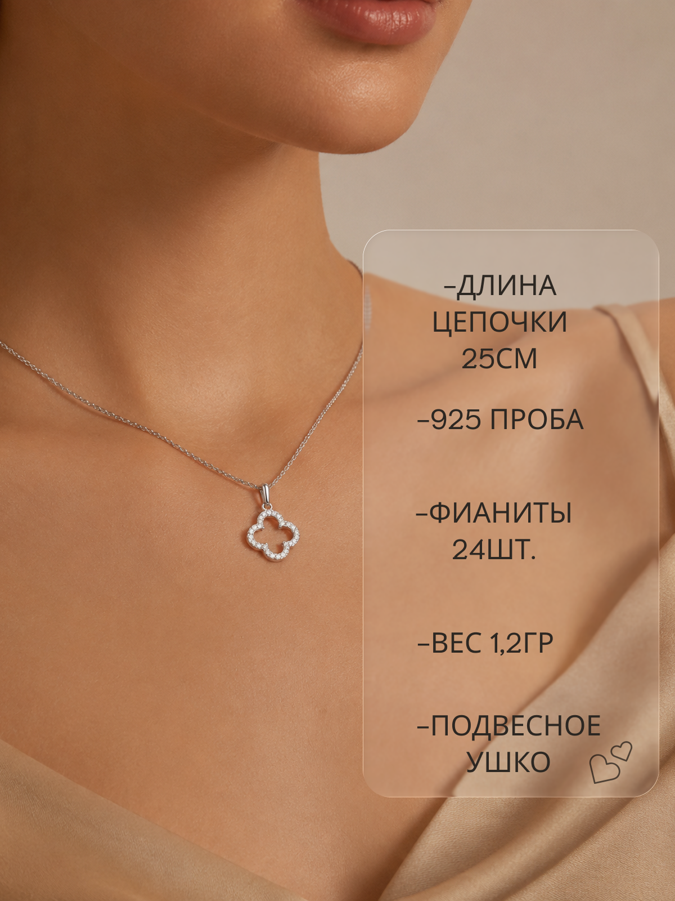

Best Silver
Серия инфографических карточек для серебряной подвески-клевера: продукт на шёлке, характеристики, комплект украшений и материал.

- Клиент
- Best Silver — бренд серебряных украшений
- Задача
- Разработать серию карточек товара для маркетплейса под серебряную подвеску-клевер: главный слайд, технические характеристики, сопутствующий комплект и акцент на материале — в едином премиальном стиле бренда.
- Роль
- Графический дизайнер: концепция серии, инфографика, типографика, компоновка предметной и лайфстайл-съёмки, подготовка под формат карточек маркетплейса.
Ювелирная категория продаётся через фактуру и деталь — украшение мелкое, и на миниатюре в выдаче маркетплейса должно читаться как «дорого», а не теряться на фоне. Поэтому в основу лёг тёплый шёлк цвета шампань как единая сцена для всей серии — он держит премиальность даже там, где кадр смещается на портрет модели.
Первая карточка отрабатывает узнавание с миниатюры — крупный логотип и подвеска на драпировке. Вторая переходит к сухим характеристикам (длина цепочки, проба, число фианитов, вес) поверх кадра на теле — так цифры читаются в контексте использования, а не как отдельная табличка. Третья карточка работает на средний чек, показывая подвеску, серьги и кольцо как комплект. Четвёртая закрывает частое возражение по серебру («темнеет») крупным акцентным текстом на фоне рук, касающихся украшения.




Серия карточек выстроила понятный путь покупателя от эмоционального узнавания к характеристикам, апсейлу комплекта и снятию возражения по уходу за серебром.